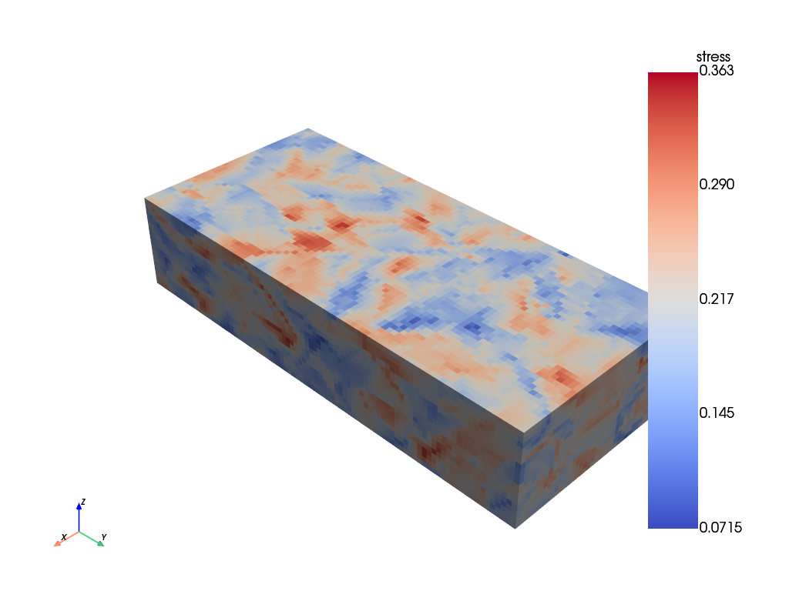
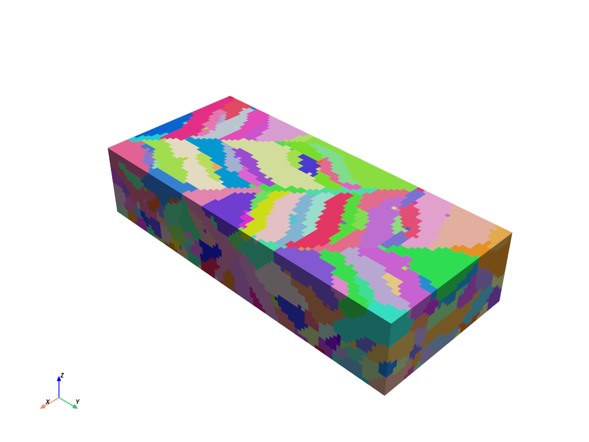

Process-structure-property demo#
Run a process-structure-property simulation using RosenthalSolidificationModel and SmallStrainFFT with an Elastic constitutive model.
from materialite import Material, Vector, add_ipf_colors_field
from materialite.models import RosenthalSolidificationModel
from materialite.models.laser_path import LaserPath
from materialite import Order4SymmetricTensor
from materialite.models.small_strain_fft import SmallStrainFFT, Elastic, LoadSchedule
import numpy as np
Create a Material
material = Material(
spacing=[5.0e-6, 5.0e-6, 5.0e-6], dimensions=[40, 90, 33]
).create_random_integer_field("grain", 1, 10000)
Create the process-structure model, which includes two layers of an additive manufacturing build. See the Rosenthal Solidification Demo and Laser Path Demo for more details.
hatch_spacing = 110.0e-6
time_between_scans = 1.0e-5
path_inputs = {
"x_bounds": [material.origin[0], material.sizes[0]],
"y_bounds": [material.origin[1], material.sizes[1]],
"hatch_spacing": hatch_spacing,
"velocity": 0.96,
"power": 285.0,
"end_offset": 900.0e-6,
"domain_offset": hatch_spacing / 2,
"delay_between_scans": time_between_scans,
}
path1 = LaserPath.angled_raster_scan(angle=67.0, z_height=120.0e-6, **path_inputs)
path2 = LaserPath.angled_raster_scan(
angle=134.0,
z_height=160.0e-6,
start_time=path1.total_time + time_between_scans,
**path_inputs
)
laser_path = LaserPath.from_list([path1, path2])
time_step_duration = 5.2e-6
output_times = (
laser_path.end_times - laser_path.start_times
) / 2 + laser_path.start_times
thermophysical_properties = {
"conductivity": 29.6,
"diffusivity": 4.79e-6,
"absorptivity": 0.46,
"melt_temperature": 1609.0,
}
solidification_properties = {"prefactor": 1.2e-5, "exponent": 2.6}
initial_temperature = 300.0
process_model = RosenthalSolidificationModel(
laser_path=laser_path,
initial_temperature=300.0,
thermophysical_properties=thermophysical_properties,
solidification_properties=solidification_properties,
time_step_duration=time_step_duration,
output_times=output_times,
)
Create the structure-property model. See the Constitutive Model demos for more details.
stiffness = Order4SymmetricTensor.from_cubic_constants(C11=243.3, C12=156.7, C44=117.8)
elastic_model = Elastic(stiffness)
load_schedule = LoadSchedule.from_constant_uniaxial_strain_rate(
magnitude=1.0, direction="y"
)
mechanical_model = SmallStrainFFT(
load_schedule=load_schedule, end_time=0.001, constitutive_model=elastic_model
)
Put everything together. Since the process-structure model does not include crystallographic texture, we assign random orientations to each grain at the end of the model and add a field with the IPF colors with respect to the loading direction. We also crop out the bottom of the model, which contains unmelted voxels from below the first layer in the process-structure model.
material = (
material.run(process_model)
.assign_random_orientations(region_label="grain")
.run(add_ipf_colors_field, direction=Vector([0, 1, 0]))
.crop(z=[70.0e-6, np.inf])
.run(
mechanical_model,
linear_solver_tolerance=1.0e-8,
global_tolerance=1.0,
strain_correction_tolerance=1.0,
)
)
0%| | 0/2257 [00:00<?, ?it/s]
0%| | 1/2257 [00:01<37:50, 1.01s/it]
0%|▍ | 11/2257 [00:01<02:49, 13.23it/s]
1%|▊ | 21/2257 [00:01<01:25, 26.16it/s]
1%|█▎ | 32/2257 [00:01<00:55, 40.34it/s]
2%|█▋ | 43/2257 [00:01<00:41, 53.33it/s]
2%|██▏ | 54/2257 [00:01<00:34, 64.76it/s]
3%|██▌ | 65/2257 [00:01<00:29, 74.55it/s]
3%|██▉ | 76/2257 [00:01<00:26, 81.40it/s]
4%|███▍ | 87/2257 [00:01<00:25, 86.52it/s]
4%|███▊ | 97/2257 [00:01<00:23, 90.06it/s]
5%|████▏ | 107/2257 [00:02<00:23, 92.69it/s]
5%|████▌ | 117/2257 [00:02<00:22, 94.45it/s]
6%|████▉ | 128/2257 [00:02<00:21, 98.09it/s]
6%|█████▍ | 140/2257 [00:02<00:20, 102.70it/s]
7%|█████▊ | 151/2257 [00:02<00:20, 104.51it/s]
7%|██████▎ | 163/2257 [00:02<00:19, 108.20it/s]
8%|██████▋ | 175/2257 [00:02<00:18, 111.48it/s]
8%|███████▏ | 188/2257 [00:02<00:18, 114.83it/s]
9%|███████▋ | 201/2257 [00:02<00:17, 118.90it/s]
10%|████████▎ | 215/2257 [00:02<00:16, 122.13it/s]
10%|████████▊ | 230/2257 [00:03<00:15, 127.63it/s]
11%|█████████▎ | 243/2257 [00:03<00:15, 127.12it/s]
11%|█████████▊ | 256/2257 [00:03<00:15, 127.44it/s]
12%|██████████▍ | 270/2257 [00:03<00:15, 127.71it/s]
13%|██████████▉ | 283/2257 [00:03<00:15, 127.25it/s]
13%|███████████▍ | 296/2257 [00:03<00:15, 127.49it/s]
14%|███████████▉ | 309/2257 [00:03<00:15, 126.27it/s]
14%|████████████▍ | 322/2257 [00:03<00:15, 124.41it/s]
15%|████████████▉ | 335/2257 [00:03<00:15, 123.72it/s]
15%|█████████████▍ | 348/2257 [00:04<00:15, 120.34it/s]
16%|█████████████▉ | 361/2257 [00:04<00:16, 116.44it/s]
17%|██████████████▍ | 373/2257 [00:04<00:16, 113.60it/s]
17%|██████████████▊ | 385/2257 [00:04<00:16, 112.49it/s]
18%|███████████████▎ | 397/2257 [00:04<00:16, 113.19it/s]
18%|███████████████▊ | 409/2257 [00:04<00:16, 112.22it/s]
19%|████████████████▏ | 421/2257 [00:04<00:16, 112.43it/s]
19%|████████████████▋ | 434/2257 [00:04<00:15, 115.01it/s]
20%|█████████████████▏ | 446/2257 [00:04<00:15, 115.06it/s]
20%|█████████████████▋ | 458/2257 [00:05<00:15, 114.70it/s]
21%|██████████████████ | 470/2257 [00:05<00:15, 115.52it/s]
21%|██████████████████▌ | 482/2257 [00:05<00:15, 116.54it/s]
22%|███████████████████ | 494/2257 [00:05<00:15, 114.62it/s]
23%|███████████████████▌ | 508/2257 [00:05<00:14, 120.41it/s]
23%|████████████████████ | 521/2257 [00:05<00:14, 120.39it/s]
24%|████████████████████▌ | 534/2257 [00:05<00:14, 118.65it/s]
24%|█████████████████████ | 547/2257 [00:05<00:14, 120.60it/s]
25%|█████████████████████▌ | 560/2257 [00:05<00:13, 122.09it/s]
25%|██████████████████████ | 573/2257 [00:05<00:13, 122.08it/s]
26%|██████████████████████▌ | 586/2257 [00:06<00:13, 122.86it/s]
27%|███████████████████████ | 599/2257 [00:06<00:13, 120.99it/s]
27%|███████████████████████▌ | 612/2257 [00:06<00:13, 119.48it/s]
28%|████████████████████████ | 624/2257 [00:06<00:13, 116.98it/s]
28%|████████████████████████▌ | 636/2257 [00:06<00:14, 112.94it/s]
29%|████████████████████████▉ | 648/2257 [00:06<00:14, 107.78it/s]
29%|█████████████████████████▍ | 659/2257 [00:06<00:15, 105.32it/s]
30%|█████████████████████████▊ | 670/2257 [00:06<00:15, 103.98it/s]
30%|██████████████████████████▎ | 681/2257 [00:06<00:15, 102.93it/s]
31%|██████████████████████████▋ | 692/2257 [00:07<00:15, 103.53it/s]
31%|███████████████████████████ | 703/2257 [00:07<00:14, 103.68it/s]
32%|███████████████████████████▌ | 715/2257 [00:07<00:14, 106.00it/s]
32%|████████████████████████████ | 727/2257 [00:07<00:13, 109.41it/s]
33%|████████████████████████████▌ | 740/2257 [00:07<00:13, 113.94it/s]
33%|█████████████████████████████ | 753/2257 [00:07<00:12, 115.96it/s]
34%|█████████████████████████████▌ | 766/2257 [00:07<00:12, 117.67it/s]
35%|██████████████████████████████ | 779/2257 [00:07<00:12, 119.40it/s]
35%|██████████████████████████████▌ | 792/2257 [00:07<00:12, 121.09it/s]
36%|███████████████████████████████▏ | 808/2257 [00:08<00:11, 130.24it/s]
36%|███████████████████████████████▋ | 822/2257 [00:08<00:10, 130.95it/s]
37%|████████████████████████████████▏ | 836/2257 [00:08<00:10, 130.76it/s]
38%|████████████████████████████████▊ | 850/2257 [00:08<00:10, 132.22it/s]
38%|█████████████████████████████████▎ | 864/2257 [00:08<00:10, 131.64it/s]
39%|█████████████████████████████████▊ | 878/2257 [00:08<00:10, 130.27it/s]
40%|██████████████████████████████████▍ | 892/2257 [00:08<00:10, 129.53it/s]
40%|██████████████████████████████████▉ | 905/2257 [00:08<00:10, 127.77it/s]
41%|███████████████████████████████████▍ | 918/2257 [00:08<00:10, 126.49it/s]
41%|███████████████████████████████████▉ | 931/2257 [00:09<00:10, 124.30it/s]
42%|████████████████████████████████████▍ | 944/2257 [00:09<00:10, 124.81it/s]
42%|████████████████████████████████████▉ | 957/2257 [00:09<00:10, 119.92it/s]
43%|█████████████████████████████████████▍ | 970/2257 [00:09<00:10, 119.99it/s]
44%|█████████████████████████████████████▉ | 983/2257 [00:09<00:10, 120.63it/s]
44%|██████████████████████████████████████▍ | 996/2257 [00:09<00:10, 121.46it/s]
45%|██████████████████████████████████████▍ | 1010/2257 [00:09<00:10, 124.06it/s]
45%|███████████████████████████████████████ | 1024/2257 [00:09<00:09, 126.64it/s]
46%|███████████████████████████████████████▋ | 1040/2257 [00:09<00:09, 133.89it/s]
47%|████████████████████████████████████████▏ | 1054/2257 [00:09<00:09, 133.45it/s]
47%|████████████████████████████████████████▋ | 1068/2257 [00:10<00:08, 134.47it/s]
48%|█████████████████████████████████████████▏ | 1082/2257 [00:10<00:08, 134.60it/s]
49%|█████████████████████████████████████████▊ | 1096/2257 [00:10<00:08, 133.88it/s]
49%|██████████████████████████████████████████▎ | 1110/2257 [00:10<00:08, 132.70it/s]
50%|██████████████████████████████████████████▊ | 1124/2257 [00:10<00:08, 131.20it/s]
50%|███████████████████████████████████████████▎ | 1138/2257 [00:10<00:08, 130.84it/s]
51%|███████████████████████████████████████████▉ | 1152/2257 [00:10<00:08, 130.87it/s]
52%|████████████████████████████████████████████▍ | 1166/2257 [00:10<00:08, 131.45it/s]
52%|████████████████████████████████████████████▉ | 1180/2257 [00:10<00:08, 133.73it/s]
53%|█████████████████████████████████████████████▌ | 1195/2257 [00:11<00:07, 136.29it/s]
54%|██████████████████████████████████████████████ | 1210/2257 [00:11<00:07, 138.20it/s]
54%|██████████████████████████████████████████████▋ | 1225/2257 [00:11<00:07, 138.58it/s]
55%|███████████████████████████████████████████████▏ | 1239/2257 [00:11<00:07, 137.83it/s]
56%|███████████████████████████████████████████████▊ | 1255/2257 [00:11<00:07, 143.00it/s]
56%|████████████████████████████████████████████████▍ | 1270/2257 [00:11<00:06, 141.60it/s]
57%|████████████████████████████████████████████████▉ | 1285/2257 [00:11<00:06, 140.99it/s]
58%|█████████████████████████████████████████████████▌ | 1300/2257 [00:11<00:06, 139.75it/s]
58%|██████████████████████████████████████████████████ | 1314/2257 [00:11<00:06, 137.38it/s]
59%|██████████████████████████████████████████████████▌ | 1328/2257 [00:11<00:06, 137.32it/s]
59%|███████████████████████████████████████████████████▏ | 1342/2257 [00:12<00:06, 133.44it/s]
60%|███████████████████████████████████████████████████▋ | 1356/2257 [00:12<00:06, 130.70it/s]
61%|████████████████████████████████████████████████████▏ | 1370/2257 [00:12<00:06, 127.78it/s]
61%|████████████████████████████████████████████████████▋ | 1383/2257 [00:12<00:07, 123.27it/s]
62%|█████████████████████████████████████████████████████▏ | 1396/2257 [00:12<00:07, 121.29it/s]
62%|█████████████████████████████████████████████████████▋ | 1409/2257 [00:12<00:07, 120.86it/s]
63%|██████████████████████████████████████████████████████▏ | 1423/2257 [00:12<00:06, 124.69it/s]
64%|██████████████████████████████████████████████████████▊ | 1438/2257 [00:12<00:06, 129.93it/s]
64%|███████████████████████████████████████████████████████▎ | 1452/2257 [00:12<00:06, 132.55it/s]
65%|███████████████████████████████████████████████████████▊ | 1466/2257 [00:13<00:05, 134.00it/s]
66%|████████████████████████████████████████████████████████▍ | 1480/2257 [00:13<00:05, 134.42it/s]
66%|████████████████████████████████████████████████████████▉ | 1494/2257 [00:13<00:05, 134.05it/s]
67%|█████████████████████████████████████████████████████████▍ | 1508/2257 [00:13<00:05, 134.23it/s]
67%|██████████████████████████████████████████████████████████ | 1523/2257 [00:13<00:05, 138.42it/s]
68%|██████████████████████████████████████████████████████████▌ | 1537/2257 [00:13<00:05, 136.30it/s]
69%|███████████████████████████████████████████████████████████ | 1551/2257 [00:13<00:05, 136.41it/s]
69%|███████████████████████████████████████████████████████████▋ | 1565/2257 [00:13<00:05, 135.25it/s]
70%|████████████████████████████████████████████████████████████▏ | 1579/2257 [00:13<00:05, 132.71it/s]
71%|████████████████████████████████████████████████████████████▋ | 1593/2257 [00:14<00:05, 131.70it/s]
71%|█████████████████████████████████████████████████████████████▏ | 1607/2257 [00:14<00:05, 126.93it/s]
72%|█████████████████████████████████████████████████████████████▋ | 1620/2257 [00:14<00:05, 123.46it/s]
72%|██████████████████████████████████████████████████████████████▏ | 1633/2257 [00:14<00:05, 118.93it/s]
73%|██████████████████████████████████████████████████████████████▋ | 1645/2257 [00:14<00:05, 115.64it/s]
73%|███████████████████████████████████████████████████████████████▏ | 1657/2257 [00:14<00:05, 113.00it/s]
74%|███████████████████████████████████████████████████████████████▌ | 1669/2257 [00:14<00:05, 113.04it/s]
75%|████████████████████████████████████████████████████████████████ | 1682/2257 [00:14<00:04, 115.61it/s]
75%|████████████████████████████████████████████████████████████████▌ | 1695/2257 [00:14<00:04, 118.75it/s]
76%|█████████████████████████████████████████████████████████████████ | 1709/2257 [00:14<00:04, 124.81it/s]
76%|█████████████████████████████████████████████████████████████████▋ | 1723/2257 [00:15<00:04, 128.29it/s]
77%|██████████████████████████████████████████████████████████████████▏ | 1737/2257 [00:15<00:03, 131.37it/s]
78%|██████████████████████████████████████████████████████████████████▋ | 1751/2257 [00:15<00:03, 130.39it/s]
78%|███████████████████████████████████████████████████████████████████▎ | 1765/2257 [00:15<00:03, 130.03it/s]
79%|███████████████████████████████████████████████████████████████████▊ | 1779/2257 [00:15<00:03, 132.60it/s]
80%|████████████████████████████████████████████████████████████████████▍ | 1795/2257 [00:15<00:03, 137.94it/s]
80%|████████████████████████████████████████████████████████████████████▉ | 1809/2257 [00:15<00:03, 136.31it/s]
81%|█████████████████████████████████████████████████████████████████████▍ | 1823/2257 [00:15<00:03, 136.75it/s]
81%|█████████████████████████████████████████████████████████████████████▉ | 1837/2257 [00:15<00:03, 134.38it/s]
82%|██████████████████████████████████████████████████████████████████████▌ | 1851/2257 [00:16<00:03, 133.53it/s]
83%|███████████████████████████████████████████████████████████████████████ | 1865/2257 [00:16<00:02, 132.63it/s]
83%|███████████████████████████████████████████████████████████████████████▌ | 1879/2257 [00:16<00:02, 128.79it/s]
84%|████████████████████████████████████████████████████████████████████████ | 1892/2257 [00:16<00:02, 123.33it/s]
84%|████████████████████████████████████████████████████████████████████████▌ | 1905/2257 [00:16<00:02, 119.90it/s]
85%|█████████████████████████████████████████████████████████████████████████ | 1918/2257 [00:16<00:02, 118.40it/s]
86%|█████████████████████████████████████████████████████████████████████████▌ | 1930/2257 [00:16<00:02, 117.99it/s]
86%|██████████████████████████████████████████████████████████████████████████ | 1943/2257 [00:16<00:02, 119.09it/s]
87%|██████████████████████████████████████████████████████████████████████████▌ | 1957/2257 [00:16<00:02, 123.43it/s]
87%|███████████████████████████████████████████████████████████████████████████▏ | 1972/2257 [00:17<00:02, 128.78it/s]
88%|███████████████████████████████████████████████████████████████████████████▋ | 1987/2257 [00:17<00:02, 132.52it/s]
89%|████████████████████████████████████████████████████████████████████████████▏ | 2001/2257 [00:17<00:01, 133.85it/s]
89%|████████████████████████████████████████████████████████████████████████████▊ | 2015/2257 [00:17<00:01, 135.37it/s]
90%|█████████████████████████████████████████████████████████████████████████████▎ | 2029/2257 [00:17<00:01, 134.35it/s]
91%|█████████████████████████████████████████████████████████████████████████████▉ | 2045/2257 [00:17<00:01, 140.80it/s]
91%|██████████████████████████████████████████████████████████████████████████████▍ | 2060/2257 [00:17<00:01, 140.01it/s]
92%|███████████████████████████████████████████████████████████████████████████████ | 2075/2257 [00:17<00:01, 138.54it/s]
93%|███████████████████████████████████████████████████████████████████████████████▌ | 2089/2257 [00:17<00:01, 138.76it/s]
93%|████████████████████████████████████████████████████████████████████████████████▏ | 2103/2257 [00:17<00:01, 137.36it/s]
94%|████████████████████████████████████████████████████████████████████████████████▋ | 2117/2257 [00:18<00:01, 134.07it/s]
94%|█████████████████████████████████████████████████████████████████████████████████▏ | 2131/2257 [00:18<00:00, 133.75it/s]
95%|█████████████████████████████████████████████████████████████████████████████████▋ | 2145/2257 [00:18<00:00, 132.35it/s]
96%|██████████████████████████████████████████████████████████████████████████████████▎ | 2159/2257 [00:18<00:00, 130.71it/s]
96%|██████████████████████████████████████████████████████████████████████████████████▊ | 2173/2257 [00:18<00:00, 132.34it/s]
97%|███████████████████████████████████████████████████████████████████████████████████▎ | 2188/2257 [00:18<00:00, 135.17it/s]
98%|███████████████████████████████████████████████████████████████████████████████████▉ | 2202/2257 [00:18<00:00, 135.65it/s]
98%|████████████████████████████████████████████████████████████████████████████████████▍ | 2217/2257 [00:18<00:00, 138.10it/s]
99%|█████████████████████████████████████████████████████████████████████████████████████ | 2231/2257 [00:18<00:00, 138.25it/s]
99%|█████████████████████████████████████████████████████████████████████████████████████▌| 2245/2257 [00:19<00:00, 138.65it/s]
100%|██████████████████████████████████████████████████████████████████████████████████████| 2257/2257 [00:19<00:00, 118.11it/s]
Plot the stress in the loading direction.
material.plot("stress", component=1)

Plot the IPF map
material.plot("ipf_color", kind="ipf_map")
